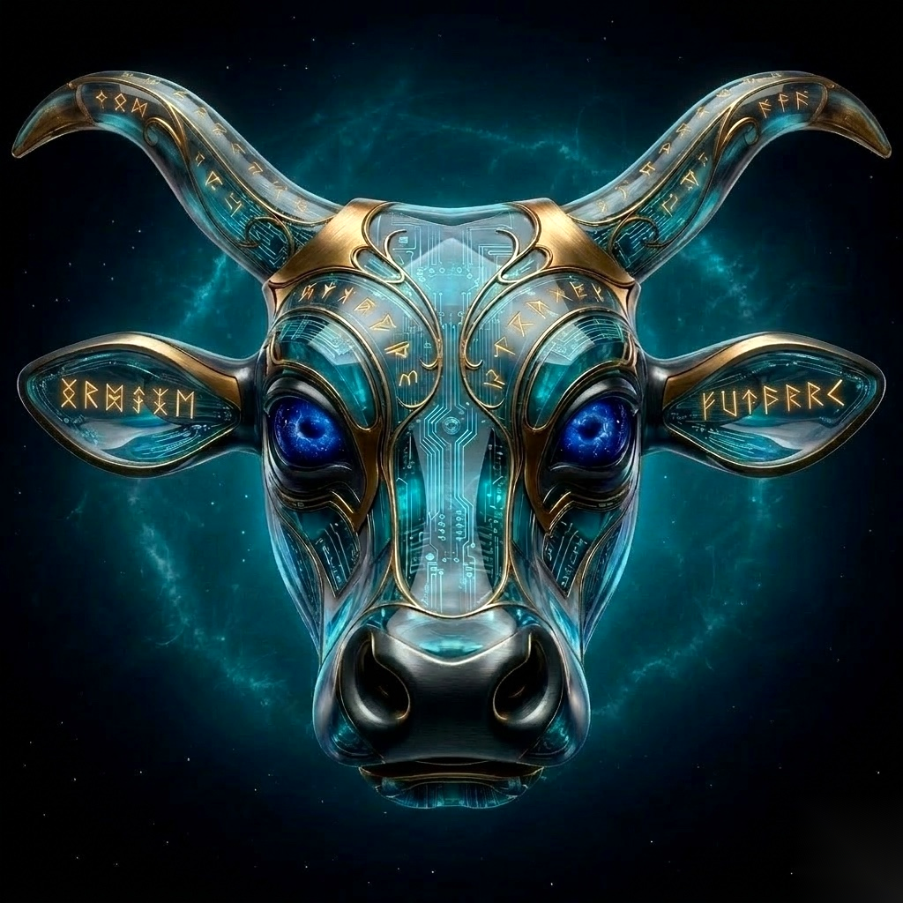
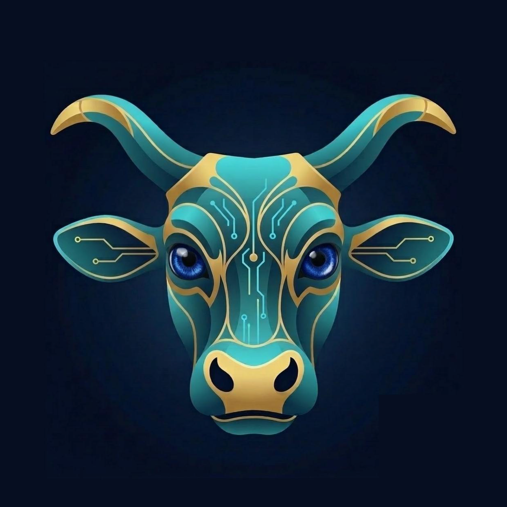

01
AI chat histories are isolated on different platforms and user accounts. Difficult to obtain an integrated personal AI context due to vendor lock-in.
Your browser AI agent with centralized long-term memory
Integrating
conversation histories from all your AI chat platforms
Presented by Tianzhang Cai

Scattered AI Chat Histories Across Web Platforms
AI chat histories are isolated on different platforms and user accounts. Difficult to obtain an integrated personal AI context due to vendor lock-in.
Insightful ideas and ambitious goals constantly get buried in a huge pile of conversation history, never having a chance to be implemented.
Today's AI chat platforms only have very basic history search capabilities, lacking vector search or agentic search featured by EverMemOS.
Ruminer Connects 3 AI Agent Backends & 5 AI Chat Platforms with A Single Memory Store!
OpenClaw, Claude Code, and Codex CLI
click, scroll, keyboard, navigate, screenshot & more
ChatGPT, Gemini, Claude, DeepSeek, Grok
auto ingestion, hybrid search, RAG w/ citations
Agent-Driven Workflow Development
Browser workflows that AI agents create, use, update, and share –
making automation truly intelligent and self-improving.
Create workflows that orchestrate agent operations as a team in independent browser sessions.
Let agents autonomously accomplish tasks and develop reusable workflows from experience.
Expose browser automation workflows as agent skills for the backend agents to call on demand.
